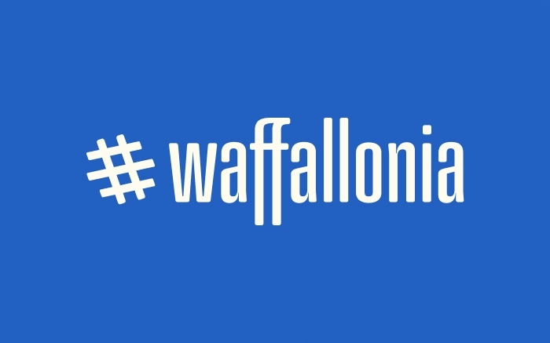
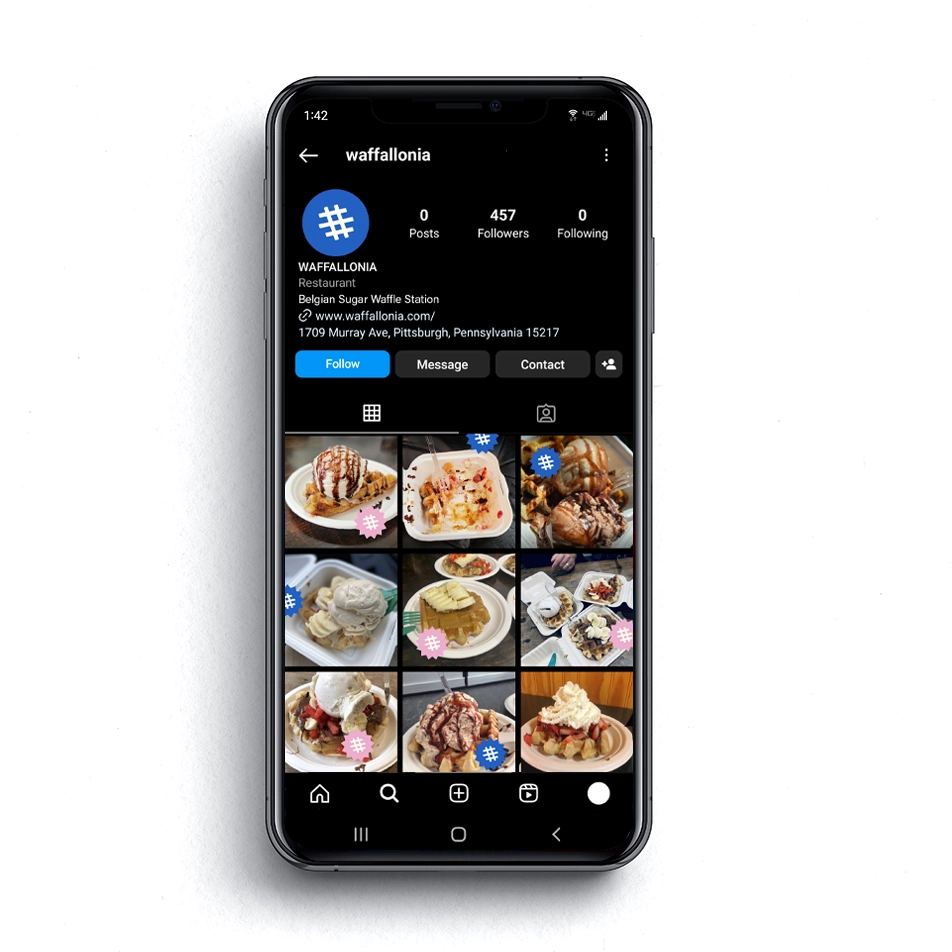
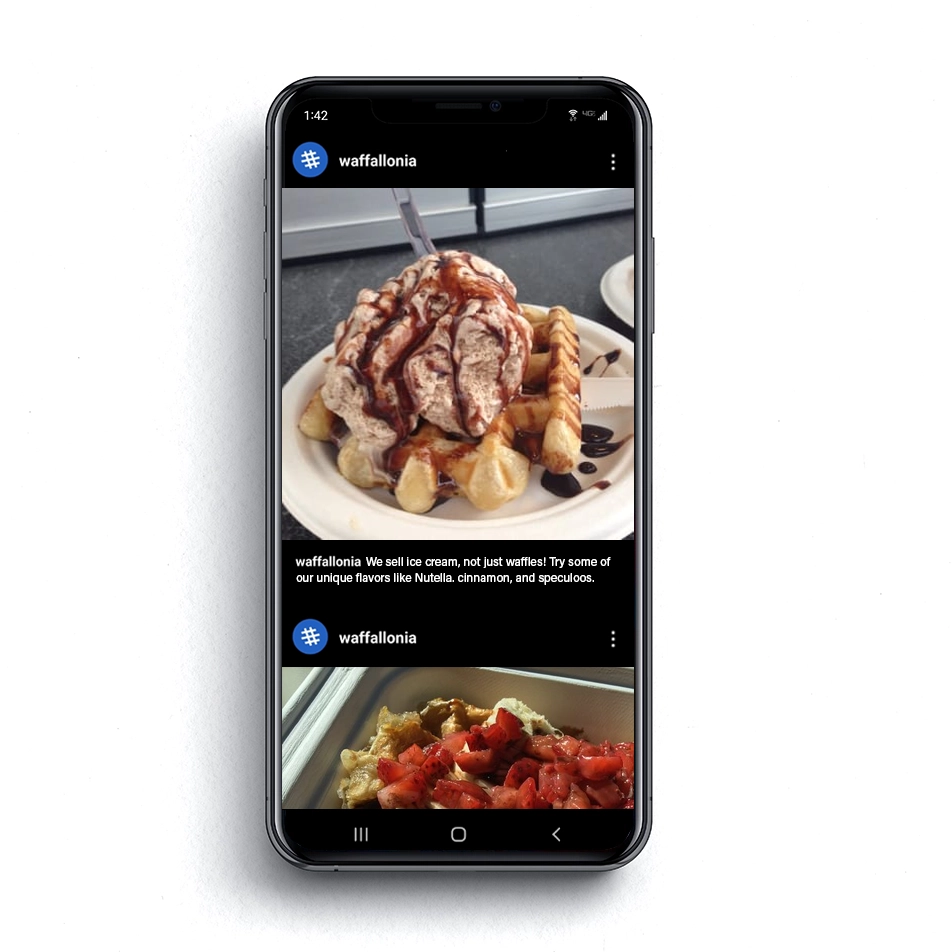

This is a hypothetical rebrand for Waffallonia, a store that sells Belgian Liége waffles and ice cream. Waffallonia is a small store that is well like by people in the community but didn't have consitent branding and almost no online presence.
I created a rebrand that fit the fun atmosphere of the store, keeping the blue color they had already incorporated into their storefront. The proposed redesign pushes their online content design in a way that is easy to update for a small business.
Project Info
2023 / Branding
I created a rebrand that fit the fun atmosphere of the store, keeping the blue color they had already incorporated into their storefront. The proposed redesign pushes their online content design in a way that is easy to update for a small business.
Project Info
2023 / Branding



